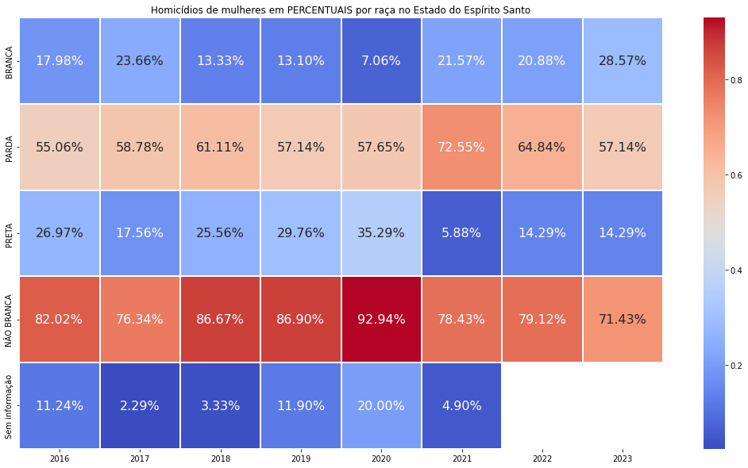

Ainda será projetado
Na região metropolitana do Estado do Espírito Santo, o índice de homicídios dolosos contra mulheres negras é alarmante!
Conheça as estatísticas e desperte a sua consciência crítica cidadã para entoar o coro do combate à violência que atinge esse grupo de vulnerabilidade
Panorama Geral (Todo o Estado do ESPÍRITO SANTO)
O gráfico da sequência demonstra que há uma prevalência de mulheres negras, entre pretas e pardas, vítimas de homicídio doloso.
As análises apresentadas foram realizada mediante o processamento da base de dados de domínio público disponibilizada pelo Instituto Jones do Santos Neves.
